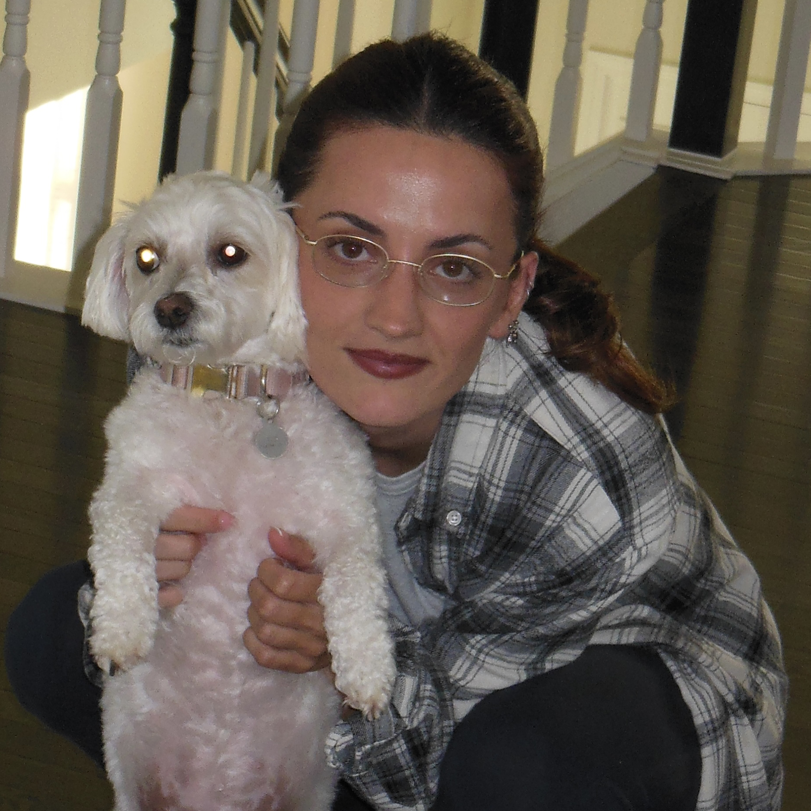

"In three words I can sum up everything I've learned about life: it goes on." —Robert Frost
Hello! My name is Alida Narkaj. I am a senior at Oakland University, expected to graduate spring of 2025 with a bachelors in Computer Science. I have lived in Michigan for most of my life, though I was born in Albania. I used to work at my local Target as a Service & Engagement Team Leader for three years, managing a team of about sixty people has helped me strengthen my leadership skills. My professional interests involve front-end web development which is why I ended up leaving my managerial position at Target to pursue a career in this field. To know more about me, have a look at my resume and about me page!